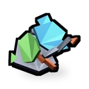

Warden's Seal
Warden's Seal is a common material. Boost. Insures the most valuable piece you're wearing on your next Dark run or risk duel.
Item sources
No monster, chest or shop hands it out.
Made by
Level 25, at the Sealwright; makes 1:

Scrap ×8 Rough Leather ×4
Rough Leather ×4 Eye Ball ×3
Eye Ball ×3 Gold Coin ×300
Gold Coin ×300 Coal ×10
Coal ×10
Uses
No recipe uses it.
Notes
Not written yet
When Warden's Seal is worth getting, and what to do with it.
Gallery
Not written yet
No pictures yet: renders, models and animations go here.
Trivia
Not written yet
Anything else worth knowing.
Changes
Not written yet
What changed for Warden's Seal, update by update.